12 November 2026 · Review only
One matchday identity.
Three connected experiences.
The stadium atmosphere now flows into readable fan posts and a focused daily quiz. Match Monster and Daily Monster share the homepage’s navy, warm amber, typography and controls.
Production approval is pending. This branch is a review build. Authentication, real cricket data, scoring, posting and rankings are not connected.
Audit findings
Baseline: repository commit 2f108af and live pages. Desktop, tablet and mobile layouts inspected, including the menu, prediction saving/locking and quiz entry.
| Severity | Observed issue | Implemented fix |
|---|---|---|
| High | Separate brands across pages Homepage navy/amber switches to cream/green with a stacked logo. Screenshot | One header, wordmark, palette and component stylesheet. |
| High | Fixture changes on entry Home previews Mumbai–Chennai; Match opens Bengaluru–Chennai. The pick is lost. Screenshot | Use Bengaluru–Chennai consistently and carry the winner into the form. |
| High | Quiz resume countdown freezes Restored attempts check expiry but do not update the visible clock after Resume. Screenshot | Restart the countdown updater when resuming. |
| Medium | Mobile task is buried Banners, breadcrumbs and repeated caveats consume the first screen. Screenshot | Compact page intros and one short practice notice. |
| Medium | Homepage marks Match as active The first navigation item has an unconditional active underline. Screenshot | Set aria-current only for the current page. |
| Medium | Feed looks like image tiles Generic takes sit over unrelated stock-like images with little post structure. Screenshot | Readable fan cards with author context, bounded topics and sample labels. |
| Medium | Daily entry repeats itself Three-minute promise is repeated in banner, heading, paragraph and metrics. Screenshot | One clear 10 questions / 3 minutes entry panel. |
| Medium | No intermediate lock demo The old toggle disables every prediction at once. Screenshot | Separate toss-locked, all-locked and example-results states. |
| Medium | Unvalidated saved values Any stored object value can enter the summary and completion count. Screenshot | Accept only values present in the question options. |
| Medium | Remote font and image dependence Pages request fonts and photographs externally; treatments vary. Screenshot | Self-host fonts and reuse the bundled licensed stadium photograph. |
| Low | Question metadata competes with copy Repeated uppercase type labels and a single 10-point example imply a scoring system. Screenshot | Small question numbers and useful deadline labels; no unsupported scores. |
| Low | Mobile menu dismissal is limited Original menus toggle but lack shared Escape and outside-click behaviour. Screenshot | Shared menu logic, focus return and visible focus styling. |


Visual identity
Night navy, warm off-white and one scoreboard amber accent. Barlow Semi Condensed provides the sports editorial headings; Source Sans 3 keeps controls, posts and questions readable. Fonts are served locally.
- Page
#101d24 - Surface
#172932 - Raised / options
#20343e - Primary text
#f4f1e9 - Secondary text
#b3bfc3 - Borders
#3b505b - Primary action / focus
#f5c65b - Action hover
#ffda85 - Selected fill
#3b3828 - Locked / disabled
#91a2aa - Correct
#9ad7b1 - Incorrect
#ffaaa0
Type: 12 / 14 / 16 / 18 / 28 / 40 / 54 / 92px, responsive where needed. Spacing follows 8px increments with 12/20px optical adjustments. Container: 1200px, 1280px on large displays. Cards: 12px radius; controls: 7–8px. Buttons and primary form controls: at least 46–48px high. Breakpoints: 360, 640, 850, 1100 and 1500px.
Reference board
| Reference | Borrow | Avoid |
|---|---|---|
| Official MI matchday graphic | Teams first, bounded team colours, compact match metadata. Official graphic visually inspected. | Competing full-page team colours and promotional density. |
| IPL and The Hundred | Distinct match identity, status and a clear next action. | Large publisher navigation, fantasy features or live-stat claims. |
| Cricbuzz | Concise fixture status and stable information order. | Advertising density and long news columns. |
Reference scope: content hierarchy was researched; no screenshot audit is claimed for IPL, The Hundred or Cricbuzz. ESPNcricinfo retrieval returned 403. No directly inspectable official Instagram post was found; the verified MI matchday graphic supplies that visual reference.
Rendered before / after
Actual browser screenshots, not generated mockups. Responsive views use an iframe at the labelled viewport width; desktop screenshots are scaled to fit the review browser. These captures show the first screen; open the application for the complete pages.
Homepage
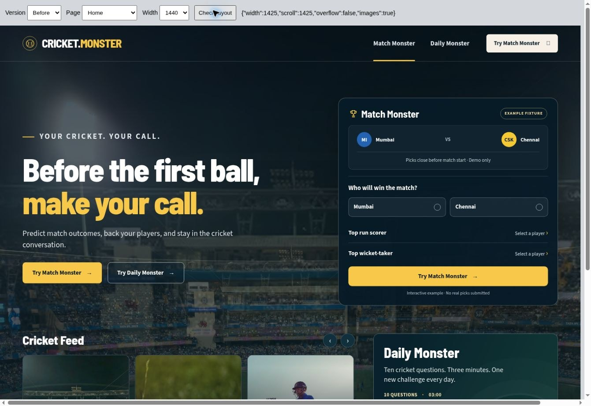

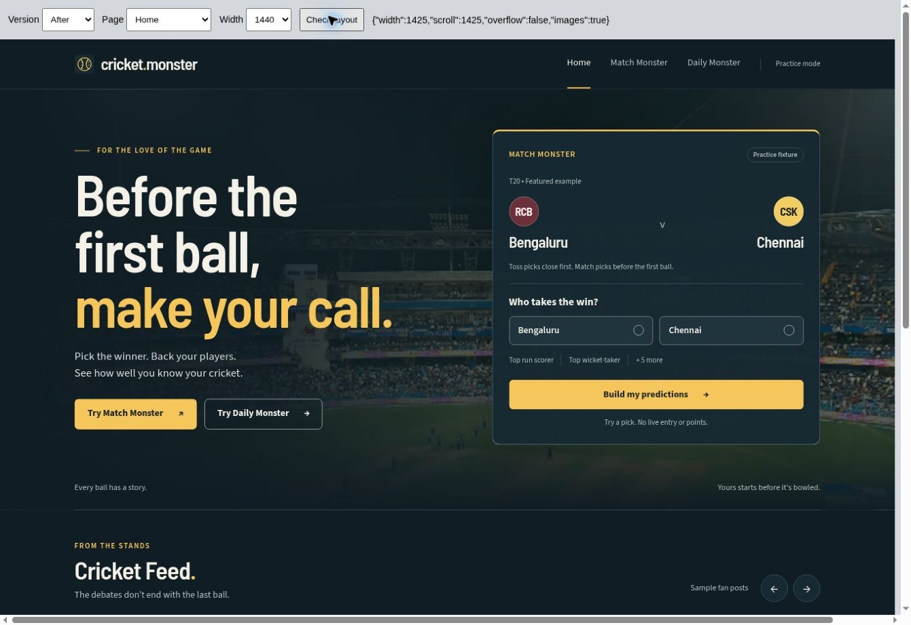
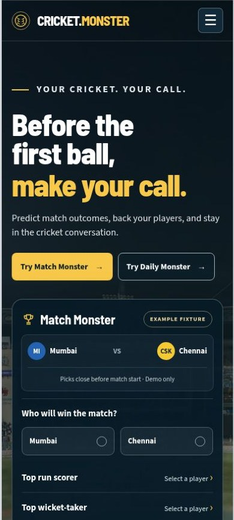

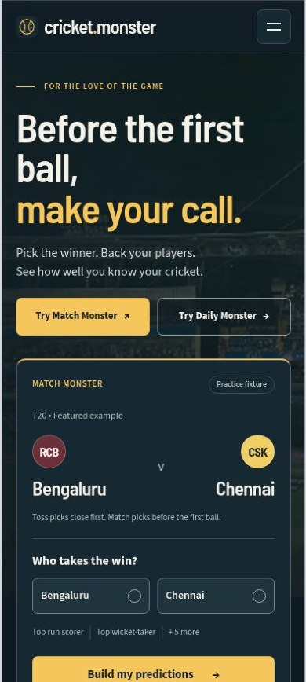
Match Monster
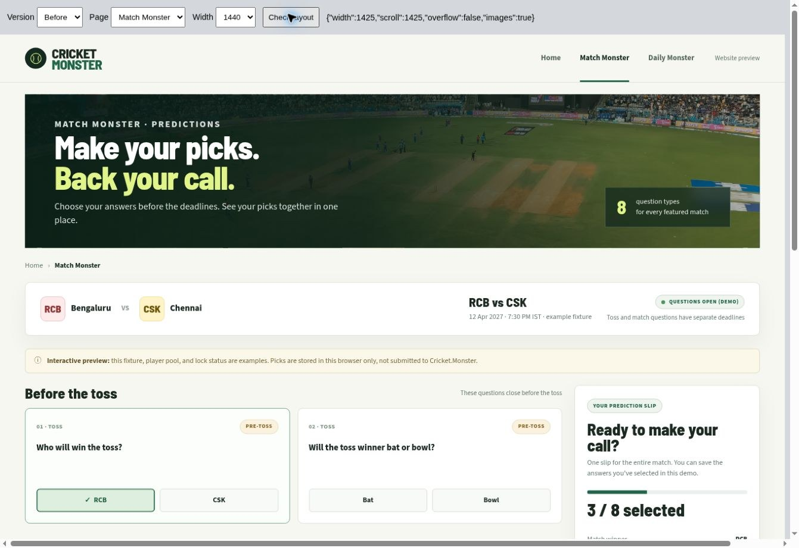

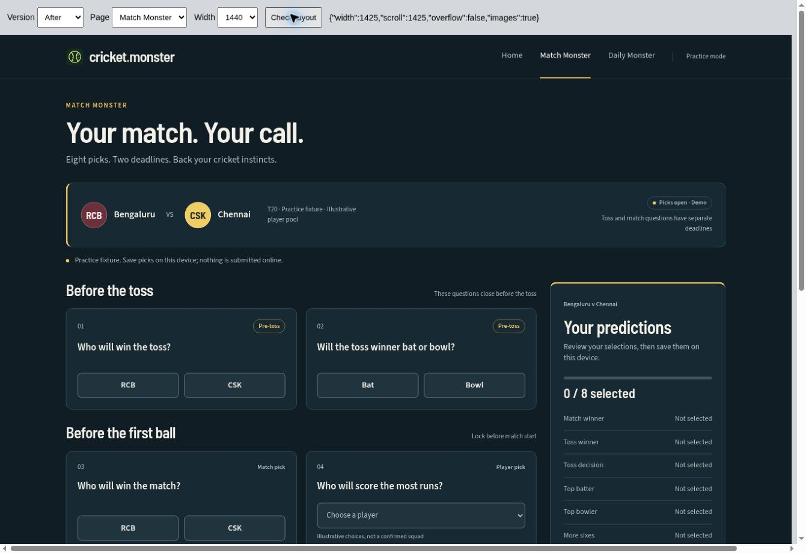

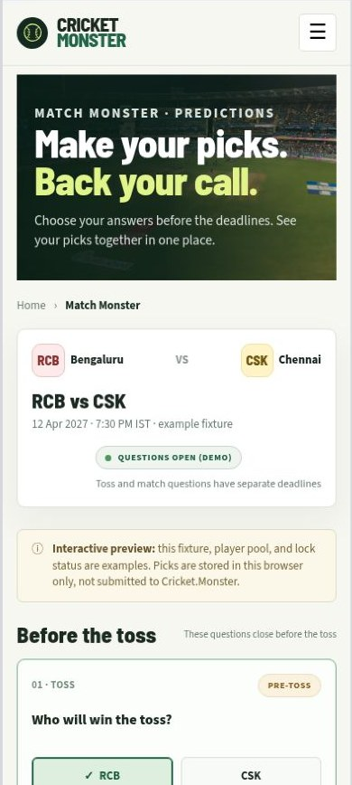

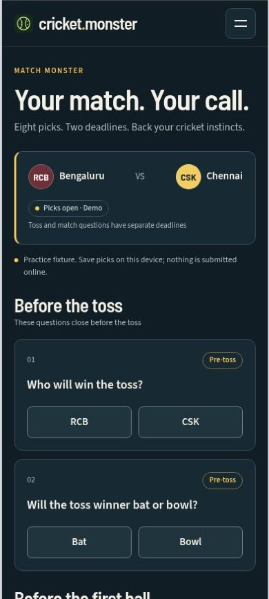
Daily Monster
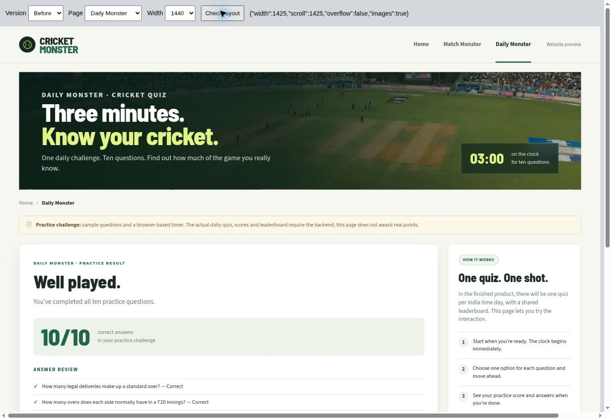

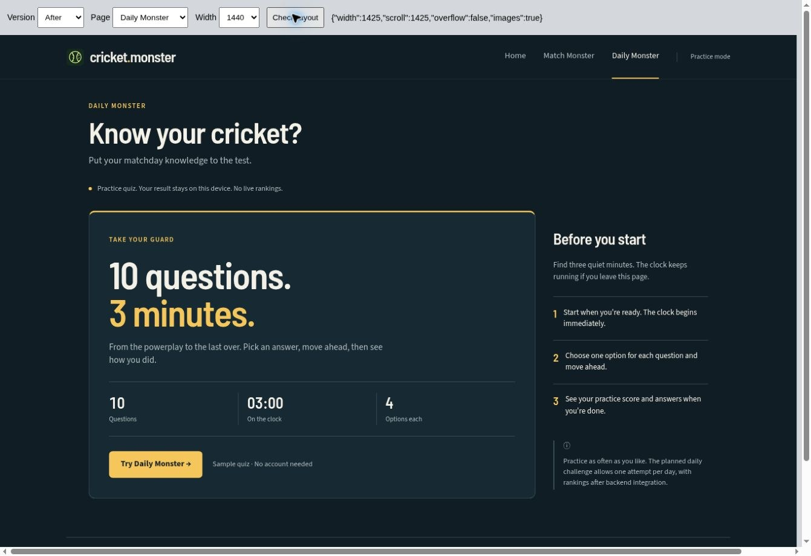
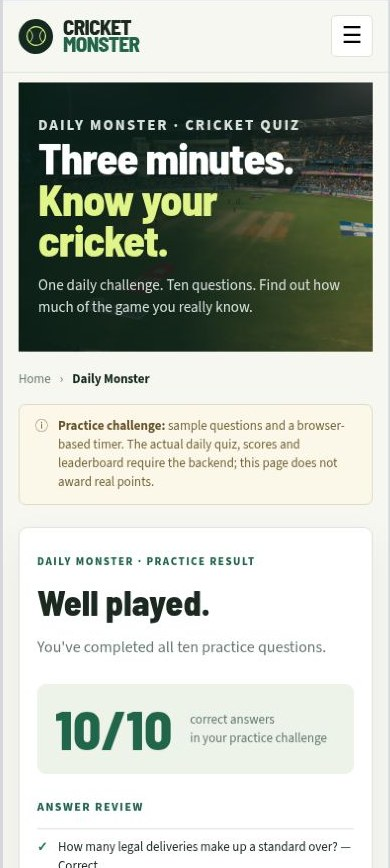

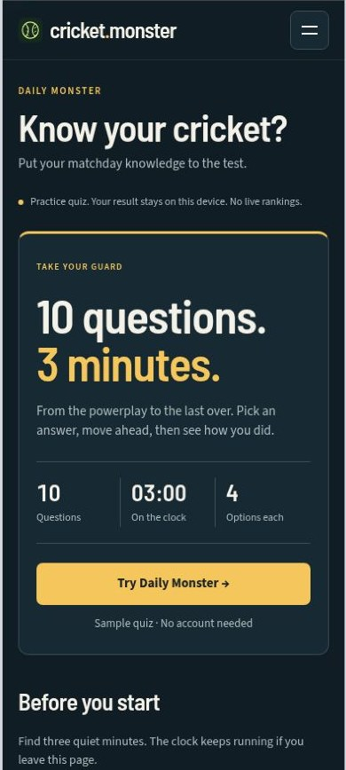
Connected lower homepage
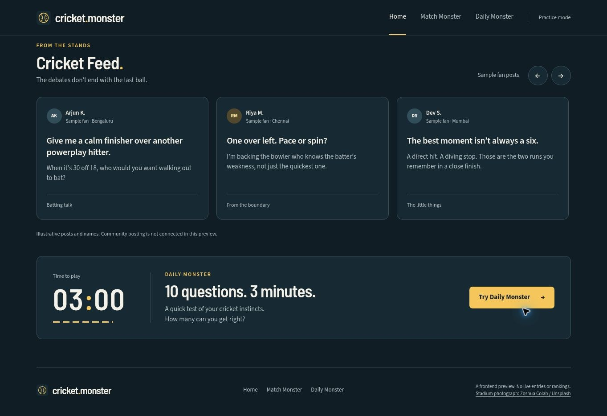
Quiz and result states
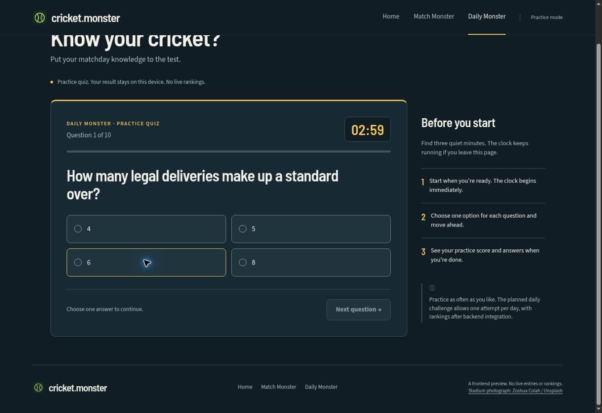
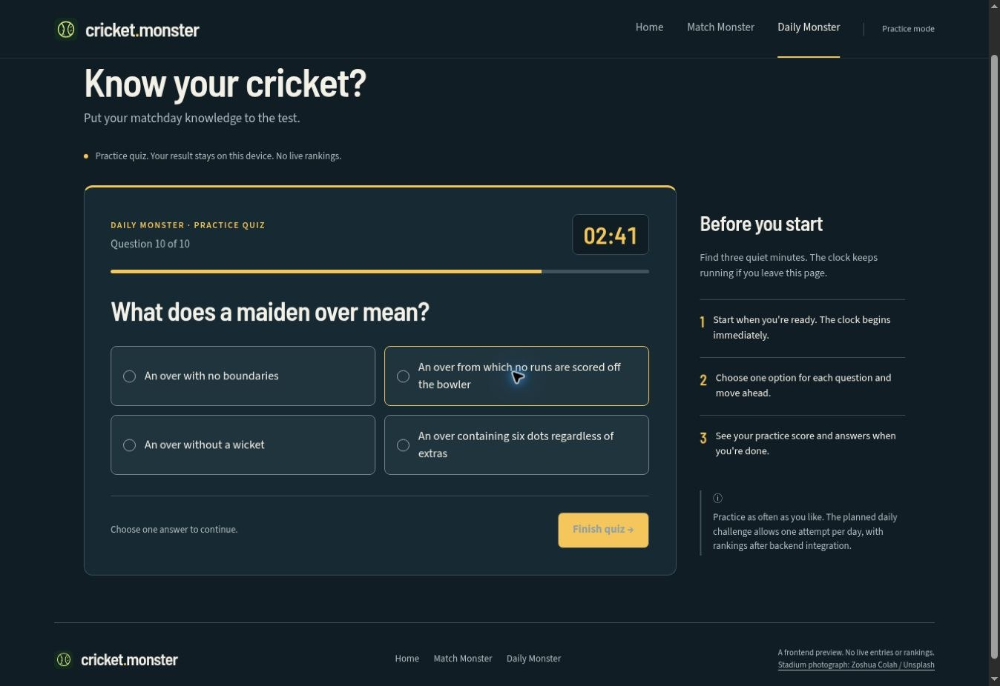
Product decisions still open
| Area | Preserved in this build | Current technical docs |
|---|---|---|
| Match | Eight existing questions; pre-toss and pre-match groups | Five questions, including run/wicket ranges; all lock at start |
| Daily | Ten questions, 180 seconds, replayable practice | Five questions, 90 seconds, one attempt per IST day |
| Feed | Clearly labelled sample fan posts; no engagement numbers | User posts, comments, likes and moderation require integration |
These contracts need reconciliation before backend integration. No Groups have been added. Sample result states do not award points.
Validation
All three pages were rendered at 320, 375, 390, 768, 1024 and 1440px. No document-level horizontal overflow; all image elements loaded. Browser scrollbars consume 15px of content width on this test environment.
Verified: winner carryover, native player selectors, partial pick saving and reload, toss-only locking, example result feedback, 10-question completion (10/10), answer review, quiz restore, mobile menu and Escape dismissal, carousel movement, shared navigation and JavaScript syntax. Local storage failure paths are implemented; live backend behaviour is outside this prototype.
Text-token contrast was calculated against base and surface colours; primary and secondary text meet AA. Focus styling is explicit. This is not a formal accessibility certification. Full-page screenshot capture timed out in this browser, so section and viewport captures are provided. Browser-extension metadata errors were excluded from application error claims.
All target-width captures
- home · 320px
- home · 375px
- home · 390px
- home · 768px
- home · 1024px
- home · 1440px
- match-monster · 320px
- match-monster · 375px
- match-monster · 390px
- match-monster · 768px
- match-monster · 1024px
- match-monster · 1440px
- daily-monster · 320px
- daily-monster · 375px
- daily-monster · 390px
- daily-monster · 768px
- daily-monster · 1024px
- daily-monster · 1440px


Release gate: stop here until Rachit says “Approve Cricket.Monster redesign for production.”